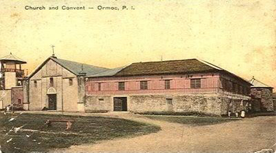
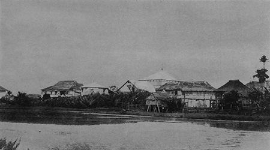
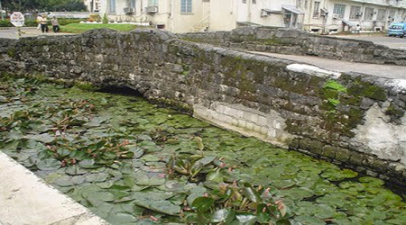
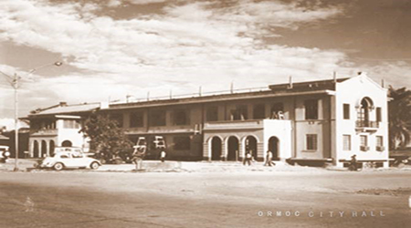
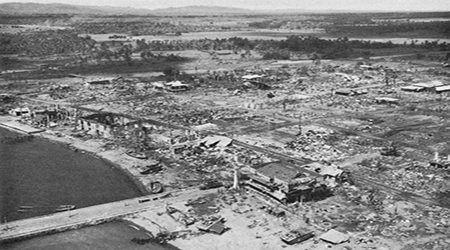
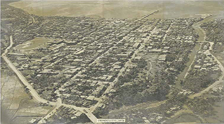
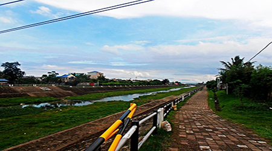
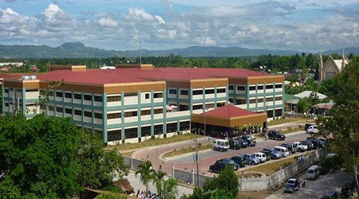

The City of Ormoc, the center of commerce and industry on the western part of Leyte, is the first non-provincial capital city of the Philippines. It is a showcase of progress and modernity even as its history is a saga of sacrifices, toils and privations of its founders. Before the Portuguese navigator, Ferdinand Magellan, reached Leyte in 1521, a handful of Malayan families lived in a small settlement called “OGMOK” – an old Visayan term for lowland or depressed plain. “Ogmok” was also the name of a spring located between the present barangays of Donghol and Mahayag. The name ORMOC, evidently, is the variation of the original name and came into use with the coming of the Spanish Conquistadores and the migration of people from the neighboring towns and islands to settle in its fertile plains. The primitive Malayans had some well-developed trade and commerce with the Chinese, Javans and Indonesians who frequented the islands in their junks, vintas and sailboats. Pigafetta, the Spanish historian, mentioned “Ogmok” in his chronicles as one place in Leyte where Magellan touched in search of food and water in March 1521. On July 16, 1595, Father Chirino and the other Jesuit missionaries arrived in Leyte. In May 1597, Fathers Alonso Rodriguez and Leonardo Scelsi founded the mission of Ormoc. This date marked the conversion of the Ogmokanons to Christianity. Ormoc, being a seacoast village, was always raided and constantly harassed by Moro pirates every now and then. Piracy and brigandage were fought by the Malayans of Ogmok, Baybay and Palompon (mother town of Ogmok). These towns established a “grapevine” communication system- “runners” from watch towers built to inform and warn the inhabitants of the presence of Moro vintas sighted far out to sea.
Early in 1634, Raja Bungsu, ruler of Sulu, captured 300 natives from Ormoc after a successful attack in Camarines. To protect the people, the Jesuit Juan del Carpio constructed fortifications, which were attacked by the Magindanaus before its completion. On December 3, 1634, the notorious pirate Katsil Kunalat (Kudarat) invaded Ogmok fresh from his invasion, pillage and plunder of the towns of Sogod, Kabalian, Kanamokan (now Inopacan) and Baybay. Fifty brave Ogmokanons fought the invaders furiously but were annihilated by sheer superiority of arms and number of the enemy. The defenders were massacred up to the last man inside the fort that defended the town and Carpio was killed. In 1768, the Augustinians took over the missions in Leyte after the Jesuits were expelled. On February 26, 1834, Ormoc was separated from her mother town Palompon and created into a separate and distinct municipality. The following month, March 1834, saw the formal inauguration of the Ormoc Catholic Parish with Rev. Fr. Bibiano Luciano as first curate.
[ FUENTE DE LA REINA. Known as the oldest bridge in the city, its cobblestones are still intact, relic of an age long gone. It was built in the early 1800 but was completed in 1861. During the Spanish era, the bridge served as a docking area for sailboats, vintas of Chinese, Javans and Indonesians who frequented the island to sell their produce.]
The line of chief executives of the Ormoc civil government is equally impressive. Immediately after the creation of Ormoc as a municipio in 1834, one Sofronio Cabiling was appointed Capitan to head the gobierno municipal. His successor capitanes were Gregorio Sacay, Epifanio Ortiz, Agaton Aparis, Inocentes Eamiguel, Rosendo Daffon, Fernando Bañez, Nicolas Torres, Mateo Solidor and Leon Aviles. During the Philippine Revolution, Leyte became involved only several months after its outbreak in August 1896. The Revolutionary Government represented by General Vicente Lukban took possession of Leyte. Shortly after the Americans defeated the Spaniards and later the Filipinos, a civil government was established in Leyte in April 22, 1901. However, an Ormocanon by the name of Faustino Ablen organized the pulahanes movement, a resistance group, which was eventually defeated by the American forces; but the heroism of Faustino Ablen became the symbol of the Ormocanons courage and bravery.
With the establishment of the American controlled civil government following the termination of the Spanish-American War at the turn of the century, Ormoc’s town executives assumed the title of Municipal President under which the following served in succession: Dr. Fernando Calderon (first and last appointed, 1898 – 1901), Simplicio Fiel (the first elected, 1901 – 1907), Teofilo Mejia (1907 – 1910), Julio Con-ui (1910 – 1913),Jose Codilla (1913 – 1916), Silverio Zamora (1916 – 1919), Ricardo Zamora (1919 – 1922), Agapito Arradaza (1922 – 1925 and re-elected in 1931-1934), Agapito Pastor (1925 – 1931; two terms), Romualdo Catingub (1934 – 1935), and Victorio Laurente (1935 – 1941; two terms). During the first term of Atty. Victorio Laurente, the Commonwealth Government came into existence on November 15, 1935. The town executive sported the title Alcalde Municipal or Municipal Mayor. Under this category the following mayors served the Municipality of Ormoc: Victorio Laurente, second term, 1938-1941; Catalino Hermosilla, 1941-1943 (replaced on the third year of his term by the Japanese Government appointing in his place Jose Codilla, 1943-1944. The Resistance Government appointed Potenciano Larrazabal, 1944-1945 ratified and confirmed later by the American Liberation Army.
When World War II broke out, Japanese Imperial forces occupied the province of Leyte on May 25, 1942. Consequently, resistance units were organized, among them was the Western Leyte Warfare Forces. On November 6, 1944, the decisive and historic battle of Ormoc “Corridor”, a three-pronged attack by the combined forces of the Americans and Filipinos encircled and placed the Yamashita Line completely under control. The American 77thDivision landed at Deposito, about 3 miles south of Ormoc, on the 7th of December; captured Camp Downer on the 9th; and entered Ormoc the next day despite enemy opposition. Ormoc became a city through Republic Act No. 179 fathered by Congressman Dominador Tan, which was approved on June 21, 1947. The late first President of the Philippine Republic Manuel A. Roxas proclaimed Ormoc a City on September 4, 1947. By virtue of Presidential Proclamation No. 42, Ormoc was formally inaugurated as a city on October 20, 1947, exactly three years after the famous Leyte Landing. From a small town of dirt roads and a few asphalt streets of the 1950s, Ormoc has metamorphosed into an expanding jungle of concrete and infrastructures. Wide concrete roads and bridges, well-equipped government and private hospitals and clinics, airport facilities, banking and financing institutions, commercial and trade establishments, housing projects, factories and industrial plants…all are eloquent evidences of modern development and progress thrusts.
Prominent mayors who were instrumental in directing Ormoc city on the to road to progress from the ravages of war during this period were the late Mayor Marcelo Bandalan, the first appointed mayor of the City of Ormoc. Then, Esteban Conejos Sr., the last appointed mayor (1957-1959) and the first elected mayor (1959-1963), followed by Iñaki A. Larrazabal Sr. who was appointed as mayor on 1948-1949 and 1953-1954; elected as mayor from 1967-1971 and re-elected 1971-1984. A flash-flood on November 5, 1991 brought death, destruction of crops and damage in properties. The severity of the damage was found to be due to massive deforestation/rapid forest denudation. In response, the government and the private sector embarked on a concerted effort directed towards full-scale reforestation of the denuded areas. Mayor Eufrocino M. Codilla Sr. (elected 1992-1995, re-elected 1995-1998 and 1998-2001) leads the drive towards the reconstruction of Ormoc City after this calamity. Under his term, reconstruction of infrastructure support facilities, reforestation projects, construction of resettlement facilities, drainage system, water system, lighting system and provision for social services for Ormoc’s constituents were undertaken. In addition he was instrumental in the construction of the Ormoc Superdome and the establishment of shopping malls in the city. Through his effort, Ormoc with the assistance of the Japan International Cooperation Agency (JICA) implemented a Flood Mitigation Project that addresses the threat of flooding of the city center during typhoons and heavy downpour.
Ormoc is now fast becoming the hub of development in the region. With its strategic geographical location in which it serves as a gateway to the Eastern Visayas, more economic activities have taken place evident in the rapid growth of business establishments, financial institutions and infrastructures. Although fast development was largely attributed to the activities spawned by the PNOC Geothermal Power production project in Tongonan, many attest the development is necessary to accommodate the rising number of people and businesses in the area. Today, Ormoc City is a picture of steady progress and stability. With its continuous modernization program, more investors are coming into the city, which contributed to it being adjudged as the 2005 Most Business-Friendly City in the Visayas by the prestigious Philippine Chamber of Commerce and Industry. And though the city has embarked on modernization, it has also keep attuned its environmental protection programs as evident in being a consistent Cleanest and Greenest City awardee in Region VIII and one of the Cleanest and Greenest City in the country. This prestigious award is a leading tribute to visualize Ormoc as a “beauty by the bay”, a wonderful place to visit whether for business or pleasure.
